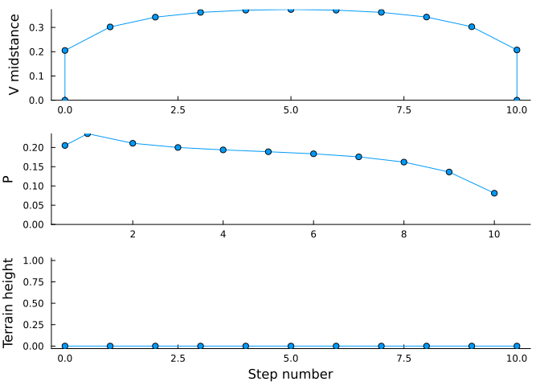
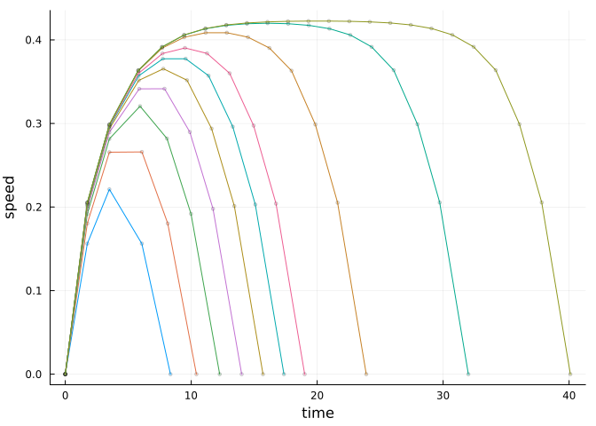
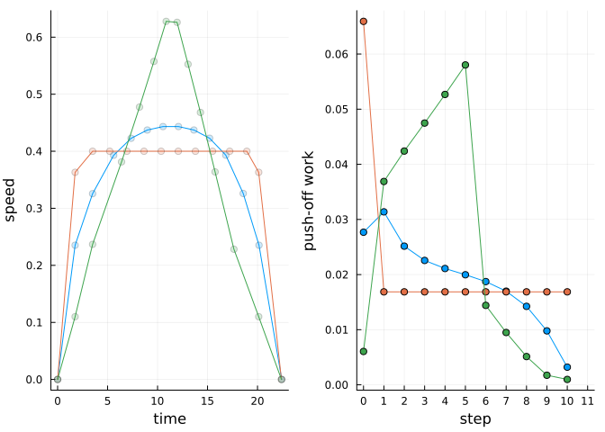

Optimization of energy and time predicts dynamic speeds for human walking (Carlisle and Kuo 2022)
Take walks of varying distances, and show how the optimal trajectory has an inverted-U velocity profile, with peak speed that increases with distance up to about 12 steps, leveling off thereafter. The cost function is net mechanical work, plus a linear cost of time with coefficient ctime.
Go for a single walk
Take a walk of 10 steps, starting and ending at rest. Find the optimal push-offs that minimize total work. The optimization is performed with optwalktime which uses a time cost (relative to work) of tchange.
Code
usingDynLoco, Plots; #plotlyjs()wstar4 =findgait(WalkRW2l(α=0.35,safety=true), target=:speed=>0.3, varying=:P)ctime =0.015# cost of time, to encourage hurryingtchange =1.75# boundary condition time to get up to speed (arbitrary, excluded from optimization) p =plot() nsteps =10result =optwalktime(wstar4, nsteps, ctime=ctime) # optimize work and timemultistepplot(result) # plot speed, push-off, terrain trajectories

Speed vs time for a short walk. The mid-stance speeds, push-offs, and terrain heights are plotted vs discrete step number.
All quantities are plotted dimensionlessly, with base units of body mass \(M\), leg length \(L\), and gravitational acceleration \(g\). Thus speed is normalized by \(\sqrt(gL)\) and time by \(\sqrt(L/g)\). For a typical leg length of \(L = 1 \mathrm{m}\), the dimensional speed is about 1.25 m/s, and step time about 0.55 s.
Go for walks of verying distance
Code
p =plot() walksteps = [1, 2, 3, 4, 5, 6, 7, 10, 15, 20] # take walks of this # of stepsresults =Array{MultiStepResults,1}(undef,0) # store each optimization result herefor (i,nsteps) inenumerate(walksteps) result =optwalktime(wstar4, nsteps, ctime=ctime) # optimize with a cost of timeplotvees!(p, result, tchange=tchange, usespline=false, color=i, speedtype=:shortwalks, rampuporder=1, markersize=2) # plot instantaneous body speed vs. timepush!(results, result) # add this optimization to results arrayendPlots.display(p) # instantaneous speed vs. distance profiles

Speed vs time for short walks; each trace is a different bout distance
Here the speeds are plotted as “body speed” each step, to match IMU. Model is parameterized by mid-stance speed each step, but IMU data only yields strides. As described by Carlisle and Kuo (2022), we use estimated mid-stance times to estimate body speed.
Compare three objectives: Energy-Time, min-COT, constant acceleration
Walk a fixed number of steps, starting and ending at rest. The objectives are:
Energy-Time minimizes total energy (positive work) plus proportional time cost
min-COT walks at a constant speed that minimizes cost of transport (energy per weight and distance traveled), with a trapezoidal speed profile. This is achieved by minimizing deviation from minCOT speed, to allow model to accelerate to that speed.
Constant accel accelerates at a constant rate, to yield a triangular speed profile. Uses a minimum variance objective to produce a constant rate of velocity change.
Compare for a fixed number of steps.
Code
# A minCOT nominal gaitwstar4n =findgait(WalkRW2l(α=0.35, safety=true), target=:speed=>0.4, varying=:P) # use a speed of 0.4 to match minCOTnsteps =10ctime =0.0195tchange =1.75nominalresult=optwalktime(wstar4n, nsteps, ctime = ctime, boundarywork=true) # to compare with our usual solution# minCOT walk. optwalkvar minimizes variance from nominalminvarresult=optwalkvar(wstar4n, nsteps, boundarywork=true)# steady acceleration walk, which tries to maintain same# acceleration each step, resulting in a triangular speed# profileA =0.0655# 1.9*wstar4n.vm/(nsteps*onestep(wstar4n).tf) # accelerationv0 =0.11# 0.8*A*tchange # a couple acceleration constants# chosen by hand to allow smooth transition from initiation# to push-off.constaccelresult =optwalktriangle(wstar4n, nsteps, A = A, boundarywork=false,boundaryvels=(v0,v0))# Make the plotsp =plot(layout=(1,2))plotvees!(p[1],nominalresult, tchange=tchange, rampuporder=1, usespline =false, markershape=:circle,speedtype=:shortwalks)plotvees!(p[1],minvarresult, tchange=tchange, rampuporder=1, usespline =false,markershape=:circle, speedtype=:shortwalks)plotvees!(p[1],constaccelresult, tchange=tchange, rampuporder=1, usespline =false,markershape=:circle, speedtype=:shortwalks, seriescolor=:auto)plot!(p[2],[0:nsteps+1], [1/2*nominalresult.vm0^2; nominalresult.steps.Pwork; NaN],markershape=:circle,seriescolor=:auto)plot!(p[2],[0:nsteps+1], [1/2*minvarresult.vm0^2; minvarresult.steps.Pwork; NaN],markershape=:circle,xticks=0:nsteps+1)plot!(p[2],[0:nsteps+1], [1/2*constaccelresult.vm0^2; constaccelresult.steps.Pwork; NaN],markershape=:circle,xticks=0:nsteps+1,seriescolor=:auto)plot!(p[2],xlabel="step", ylabel="push-off work", legend=false)energytimework =1/2*nominalresult.vm0^2+sum(nominalresult.steps.Pwork)mincotwork =1/2*minvarresult.vm0^2+sum(minvarresult.steps.Pwork)trianglework = (1/2*constaccelresult.vm0^2+sum(constaccelresult.steps.Pwork))/(1/2*nominalresult.vm0^2+sum(nominalresult.steps.Pwork))Plots.display(p)

Quantify the three predictions. The energy cost for each walk consists of the positive work for gait initiation plus the positive push-off work for all steps. Negative work is ignored, because equal magnitudes of positive and negative work are performed for this task. If there are constant efficiencies for muscles to perform positive and negative work, the physiological cost of negative work is proportional to positive work. This affects the total metabolic cost, but does not affect the optimal solutions.
usingMarkdownMarkdown.parse("""The energy-time work is $(threecosts[1]). The min-COT work is $(threecosts[2]).The const accel work is $(threecosts[3]).Minimization of cost of transport is not energetically optimal, because it is less costly to vary speed dynamically. In particular, the fast speed-up of minCOT is very costly. """)
The energy-time work is 0.21077394712113307. The min-COT work is 0.23455721768541665. The const accel work is 0.2752584233181397.
Minimization of cost of transport is not energetically optimal, because it is less costly to vary speed dynamically. In particular, the fast speed-up of minCOT is very costly.
Carlisle, R. Elizabeth, and Arthur D. Kuo. 2022. “Optimization of Energy and Time Predicts Dynamic Speeds for Human Walking.”bioRxiv. https://doi.org/10.1101/2022.07.15.500158.